Welcome to the Brooklyn Library
About
The Brooklyn Library is a free workspace, a large number of books and a cozy coffee shop inside


Favorites
Pick favorites of season
Staff Picks
The Book Eaters
By Sunyi Dean
An unusual sci-fi story about a book eater woman who tries desperately to save her dangerous mind-eater son from tradition and certain death. Complete with dysfunctional family values, light Sapphic romance, and a strong, complex protagonist. Not for the faint of heart.
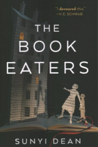
Staff Picks
Cackle
By Rachel Harrison
Are your Halloween movies of choice The Witches of Eastwick and Practical Magic? Look no further than here - where a woman recovering from a breakup moves to a quaint town in upstate New York and befriends a beautiful witch.
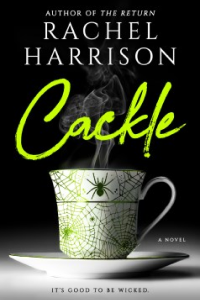
Staff Picks
Dante: Poet of the Secular World
By Erich Auerbach
Auerbach's engaging book places the 'Comedy' within the tradition of epic, tragedy, and philosophy in general, arguing for Dante's uniqueness as one who raised the individual and his drama of soul into something of divine significance—an inspired introduction to Dante's main themes.
Staff Picks
The Last Queen
By Clive Irving
A timely and revelatory new biography of Queen Elizabeth (and her family) exploring how the Windsors have evolved and thrived as the modern world has changed around them.
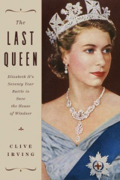
Staff Picks
The Body
By Stephen King
Powerful novel that takes you back to a nostalgic time, exploring both the beauty and danger and loss of innocence that is youth.
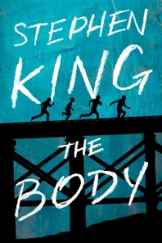
Staff Picks
Carry: A Memoir of Survival on Stolen Land
By Toni Jenson
This memoir about the author's relationship with gun violence feels both expansive and intimate, resulting in a lyrical indictment of the way things are.
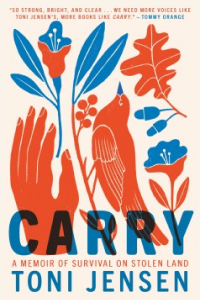
Staff Picks
Days of Distraction
By Alexandra Chang
A sardonic view of Silicon Valley culture, a meditation on race, and a journal of displacement and belonging, all in one form-defying package of spare prose.
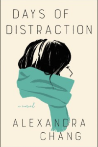
Staff Picks
Dominicana
By Angie Cruz
A fascinating story of a teenage girl who marries a man twice her age with the promise to bring her to America. Her marriage is an opportunity for her family to eventually immigrate. For fans of Isabel Allende and Julia Alvarez.
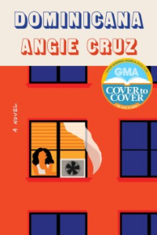
Staff Picks
Dominicana
By Angie Cruz
A fascinating story of a teenage girl who marries a man twice her age with the promise to bring her to America. Her marriage is an opportunity for her family to eventually immigrate. For fans of Isabel Allende and Julia Alvarez.
Staff Picks
Crude: A Memoir
By Pablo Fajardo & Sophie Tardy-Joubert
Drawing and color by Damien Roudeau | This book illustrates the struggles of a group of indigenous Ecuadoreans as they try to sue the ChevronTexaco company for damage their oil fields did to the Amazon and her people
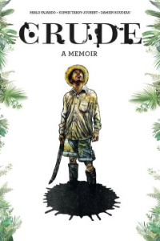
Staff Picks
Let My People Go Surfing
By Yvon Chouinard
Chouinard—climber, businessman, environmentalist—shares tales of courage and persistence from his experience of founding and leading Patagonia, Inc. Full title: Let My People Go Surfing: The Education of a Reluctant Businessman, Including 10 More Years of Business Unusual.
Staff Picks
Shark Dialogues: A Novel
By Kiana Davenport
An epic saga of seven generations of one family encompasses the tumultuous history of Hawaii as a Hawaiian woman gathers her four granddaughters together in an erotic tale of villains and dreamers, queens and revolutionaries, lepers and healers.
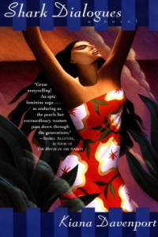
Staff Picks
The Octopus Museum: Poems
By Brenda Shaughnessy
This collection of bold and scathingly beautiful feminist poems imagines what comes after our current age of environmental destruction, racism, sexism, and divisive politics.
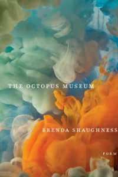
Staff Picks
Casual Conversation
By Renia White
White's impressive debut collection takes readers through and beyond the concepts of conversation and the casual - both what we say to each other and what we don't, examining the possibilities around how we construct and communicate identity.
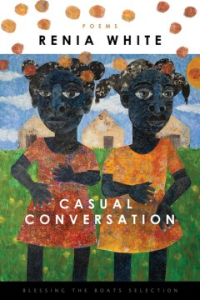
Staff Picks
The Great Fire
By Lou Ureneck
The harrowing story of an ordinary American and a principled Naval officer who, horrified by the burning of Smyrna, led an extraordinary rescue effort that saved a quarter of a million refugees from the Armenian Genocide
Staff Picks
Rickey: The Life and Legend
By Howard Bryant
With the fall rolling around, one can't help but think of baseball's postseason coming up! And what better way to prepare for it than reading the biography of one of the game's all-time greatest performers, the Man of Steal, Rickey Henderson?
Staff Picks
Slug: And Other Stories
By Megan Milks
Exes Tegan and Sara find themselves chained together by hairballs of codependency. A father and child experience the shared trauma of giving birth to gods from their wounds.
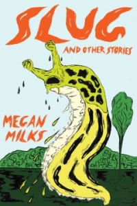